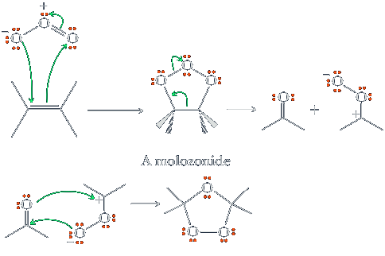

Oxidation
We begin this section with a review of the defi nitions of oxidation and reduction. We then consider two common oxidation reactions of alkenes. Oxidation is the loss of electrons, and reduction is the gain of electrons. In the following reactions, propene is transformed into two different compounds by reactions we study in this and the following section. The first reaction involves reduction and the second involves oxidation. These equations, however, do not specify what reagents are necessary to bring about the particular transformation. Each does specify, however, that the carbon atoms of the products are derived from those of propene.
 Propene | reduction ⟶ | CH3CH2CH3 Propane | ||
| oxidation ⟶ |  1,2-Propanediol |
As an alternative way to recognize oxidation/reduction, recall from your course in general chemistry that oxidation and reduction can be defi ned in terms of the loss or gain or oxygens or hydrogens. For organic compounds:
oxidation: The addition of O to and/or removal of H from a carbon atom.
reduction: The removal of O from and/or addition of H to a carbon atom.
OsO4 —Oxidation of an Alkene to a Glycol
Osmium tetroxide, OsO4, and certain other transition metal oxides are effective oxidizing agents for the conversion of an alkene to a 1,2-diol (a glycol, also known as a vicinal diol). OsO4 is highly electrophilic and adds in a single step to the alkene. Oxidation of an alkene by OsO4 is syn stereoselective; it involves syn addition of an OH group to each carbon of the double bond. For example, oxidation of cyclopentene gives cis-1,2-cyclopentanediol. Note that both cis and trans isomers are possible for this glycol but that only the cis glycol forms in this oxidation.

OsO4
⟶
NHSO3
⟶
H2O

(a cis glycol)
The syn stereoselectivity of the osmium tetroxide oxidation of an alkene is accounted for by the formation of a cyclic osmate in such a way that the five membered osmium-containing ring is bonded in a cis confi guration to the original alkene. Osmates can be isolated and characterized. Usually, the osmate is treated directly with a reducing agent, such as NaHSO3, which cleaves the osmium-oxygen bonds to give a cis glycol and reduced forms of osmium.
The drawbacks of OsO4 are that it is both expensive and highly toxic. One strategy to circumvent the high cost is to use it in catalytic amounts along with a stoichiometric amount of another oxidizing agent whose purpose is to reoxidize the reduced forms of osmium and, thus, recycle the osmium reagent. Secondary oxidizing agents commonly used for this purpose are hydrogen peroxide and tert-butyl hydroperoxide. When this procedure is used, there is no need for a reducing step using NaHSO3.
HOOH
Hydrogen peroxide

Syn hydroxylation of cis-2-butene gives meso-2,3-butanediol; because the meso compound is achiral, the product is optically inactive.
 cis-2-Butene cis-2-Butene | OsO4 ⟶ ROOH |
(2S,3R)-2,3-Butanediol meso compound |
+ | (2S,3R)-2,3-Butanediol meso compound |
Syn hydroxylation of trans-2-butene gives racemic 2,3-butanediol. Because the diol is formed as a racemic mixture, the product of the oxidation of the trans alkene is also optically inactive.
 trans-2-Butene trans-2-Butene | OsO4 ⟶ ROOH |
cpation>(2S,3S)-2,3-Butanediol enantiomer part of a racemic mixture |
+ | (2R,3R)-2,3-Butanediol enantiomer part of a racemic mixture |
Ozone—Cleavage of a Carbon-Carbon Double Bond (Ozonolysis)
Treating an alkene with ozone, O3, followed by a suitable work-up cleaves the carbon-carbon double bond and forms two carbonyl (C=O) groups in its place. Once again, as with all reagents discussed in this chapter, O3 is strongly electrophilic. This reaction is noteworthy because it is one of the very few organic reactions that breaks C−C bonds. The alkene is dissolved in an inert solvent, such as CH2Cl2, and a stream of ozone is bubbled through the solution. The products isolated from ozonolysis depend on the reaction conditions. Hydrolysis of the reaction mixture with water yields hydrogen peroxide, an oxidizing agent that can bring about further oxidations. To prevent side reactions caused by reactive peroxide intermediates, a weak reducing agent, most commonly dimethyl sulfide, (CH3)2S, is added during the work-up to reduce peroxides to water.
 2-Methyl-2-pentene 2-Methyl-2-pentene | 1) O3 ⟶ 2) (CH3)2S |
Propanone | + | Propanal |
The mechanism of ozonolysis proceeds through initial electrophilic addition of ozone to the double bond, a transformation that yields the so-called molozonide. In this reaction, as in several others already presented, six electrons move in concerted fashion in a cyclic transition state. The molozonide is unstable and breaks apart into a carbonyl fragment and a carbonyl oxide fragment through another cyclic six-electron rearrangement. Recombination of the two fragments as shown yields the ozonide.
To understand how an ozonide is formed, we must first examine the structure of ozone. We can write this molecule as a hybrid of four contributing structures, all of which show separation of unlike charge.
Step 1. Molozonide formation and cleavage. The resulting fragments recombine to form an ozonide
Step 2. Reduction of the ozonide and cleavage results in the final carbonyl fragments.
KMnO4
An older reagent for vicinal syn dihydroxylation of alkenes is potassium permanganate, KMnO4. Although this reagent functions in a manner that is mechanistically similar to OsO4, it is less useful for synthesizing diols because of a tendency to give poorer yields owing to overoxidation. Potassium permanganate solutions, which are deep purple, are useful as a color test for alkenes, however: Upon reaction, the purple reagent is immediately converted into the brown precipitate of its reduction product, MnO2.